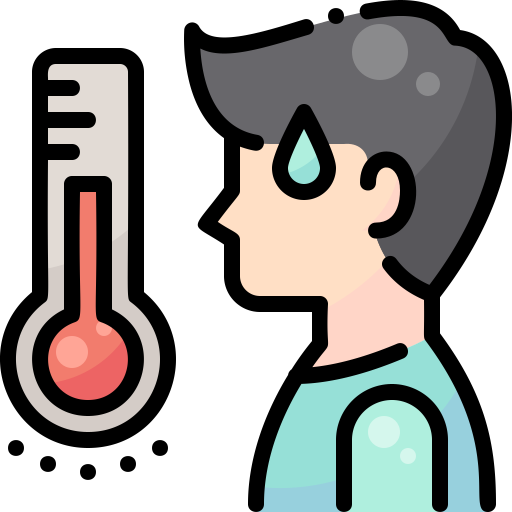

Síntomas de la Covid-19
Los sintomas habituales son:
- Fiebre

- Tos seca
- Cansancio
Otros síntomas menos frecuentes y que pueden afectan a algunos pacientes:
- Pérdida del gusto o el olfato
- Dolor de garganta
- Dolor de cabeza

- Dolores musculares o articulares
- Náuseas o vómitos
- Diarrea
¿Qué les ocurre a las personas que contraen la Covid-19?
Entre las personas que desarrollan síntomas, la mayoría (alrededor del 80%) se recuperan de la enfermedad sin necesidad de recibir tratamiento hospitalario. Alrededor del 15% desarrollan una enfermedad grave y requieren oxígeno y el 5% llegan a un estado crítico y precisan cuidados intensivos.
¿Quién corre mayor riesgo con esta enfermedad?
Las personas de más de 60 años y las que padecen afecciones médicas subyacentes, como hipertensión arterial, problemas cardíacos o pulmonares, diabetes, obesidad o cáncer, corren un mayor riesgo de presentar cuadros graves.
Sin embargo, cualquier persona, a cualquier edad, puede enfermar de COVID-19 y presentar un cuadro grave o morir.
¿Cómo nos podemos proteger de la Covid 19?
Debemos mantener el distanciamiento físico; utilizar mascarilla, especialmente cuando no se pueda mantener el distanciamiento; mantener las habitaciones bien ventiladas; evitar las aglomeraciones y el contacto estrecho con otras personas; lavarse las manos de forma periódica; y toser cubriéndose con el codo flexionado o con un pañuelo.
¿Cuándo debo hacerme la prueba de la Covid 19?
Todas las personas que presenten síntomas deben hacerse la prueba. Las personas que sean asintomáticas pero que hayan estado en contacto estrecho con alguien que esté o pueda estar infectado también pueden considerar la posibilidad de hacerse la prueba; consulte las directrices sanitarias locales y siga sus indicaciones. Mientras la persona espera el resultado, debe estar aislado por precaución.
¿Aislamiento y Cuarentena es lo mismo?
Aislamiento hace referencia a una persona que tuvo síntomas, se hizo la prueba y está esperando el resultado, debe aislarse en ese corto periodo de tiempo para tener precaución, el aislamiento puede durar de 1 a 3 días.
Cuarentena hace referencia a una persona que fue diagnosticada con la enfermedad, esta persona pasa de un periodo de aislamiento a un periodo de cuarentena, este nuevo periodo es más largo, puede durar 1 o 2 semanas dependiendo de su estado de salud.
¿Existe una vacuna contra la Covid-19?
Si, distintos países han creado vacunas, que han sido autorizadas por algunos organismos de salud, de hecho, en la mayoría de los países ya han vacunado a las personas mayores de 60, que son las personas con más riesgos de morir a causa de la enfermedad, ahora estamos en proceso de vacunación para médicos, enfermeros, policías, profesores y todo tipo de trabajadores del estado. Cabe aclarar que aplicarse la vacuna no significa que ya eres inmune a la enfermedad, igualmente te puedes contagiar del covid 19 pero no vas a sentir graves síntomas, igual debes cuidarte para cuidar a las personas que no están vacunados.
Conclusión
Es realmente importante conocer un poco más sobre este virus actual, pues en este intentamos resolver todas las dudas que las personas se hacen, a veces no sabemos diferenciar los términos, no sabemos identificar cuando tenemos síntomas, no sabemos cuándo hay que hacernos la prueba y hago una invitación a cuidarse, estar siempre prevenido, no contagies a tus padres o a tus abuelos, cuídate y cuídalos.
Más adelante contaremos la experiencia de como es tener a un familiar contagiado, analizando las causas y sus consecuencias.